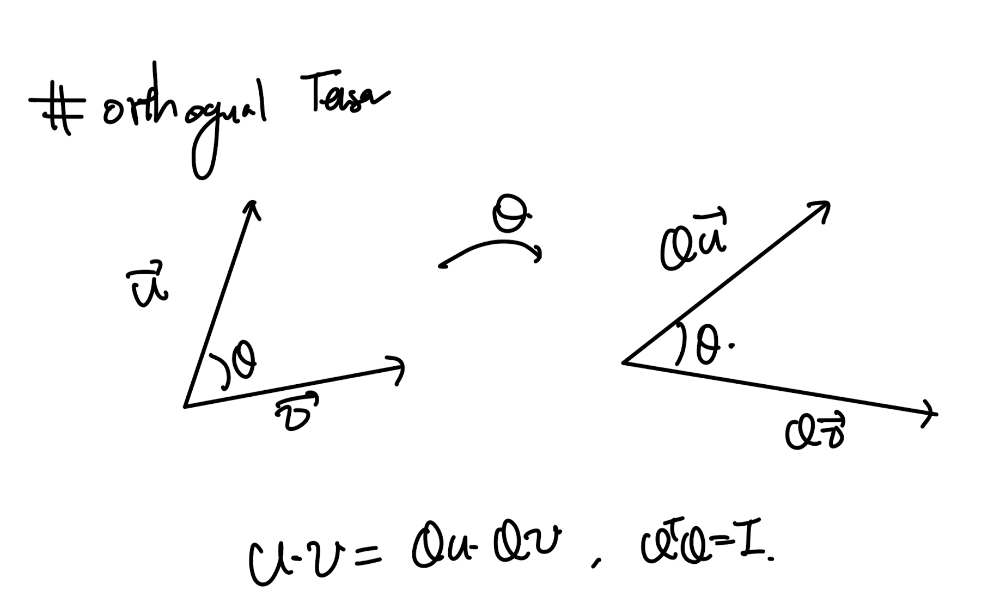
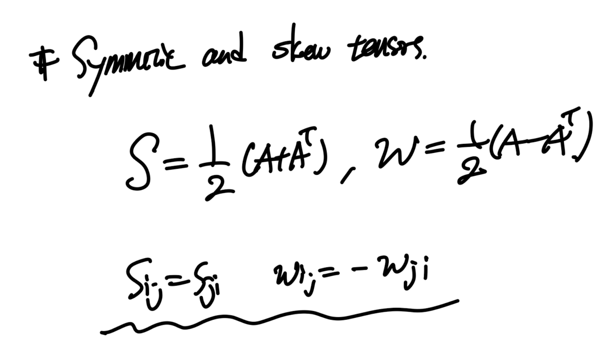
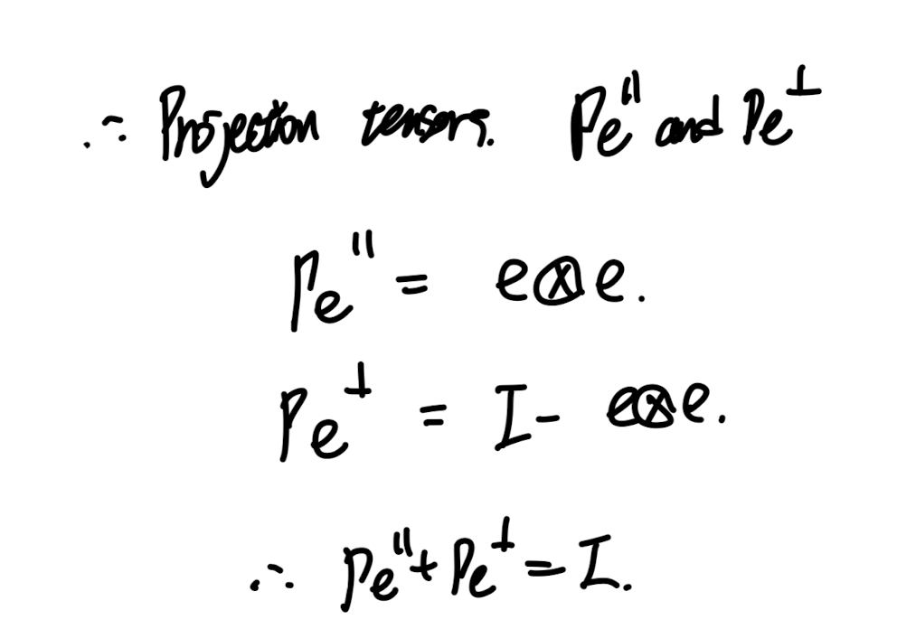
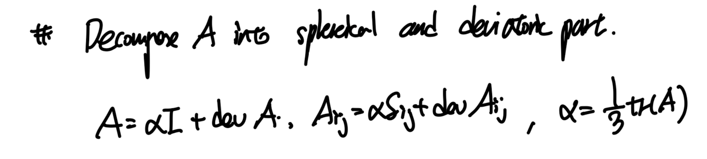
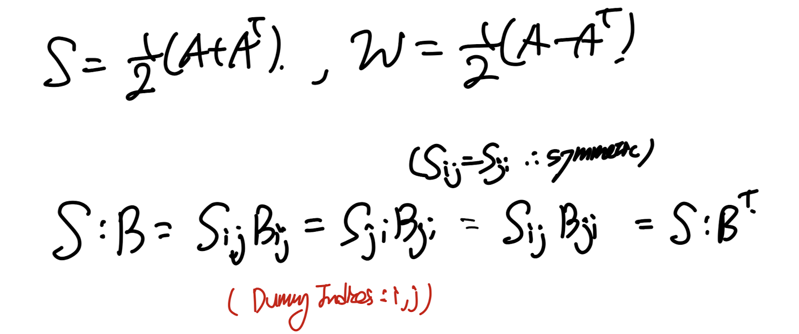
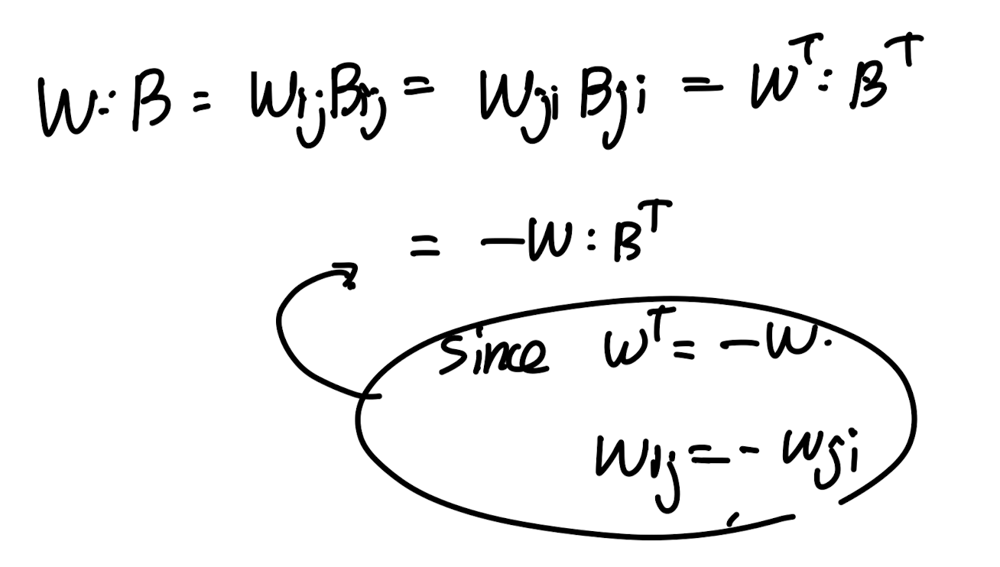

Ch1 Introduction to Vectors and Tensors - part1b
지난 포스터에 이어서
1.2 Algebra of Tensors
의 마지막 부분을 다루어 보자
지난시간에는 index notation을 활용하여,
다양한 tensor 연산 기호들을 살펴보았다.
triple product, tensor product, ....
이번에는 다양한 tensor들 중에서도,
유별나고 특별한 녀석들을 살펴볼 것이다.
Orthogonal Tensor

다시 말하지만 Tensor는 매핑이다.
어떠한 벡터를 벡터로 바꾸어 준다
(2nd order tensor 기준)
(추후에 배우겠지만 4th order tensor는
2nd order tensor를 다른 2nd order tensor로
전환시켜준다)

n * n matrix.
그리고, Matrix라는 것은
2nd order tensor를 [ ... ] bracket에 표현하는
표현 방식이다!
(matrix말고 텐서를 표현하는 방식이 또 있을까??)
우리가 지금까지 계속해서 써왔던 바로,
index notation
index로 텐서를 표현하는것!
아무튼 다시 우리의 개념인 orthogonal tensor로 다시 돌아가면,
매핑을 해서 새로운 백터로 두개를 바꾸었는데
바꾼 벡터의 내적이 기존백터의 내적과 동일하다???
바로 Mapping시켜준, (linear transformation시켜준)
Tensor가 바로 Orthogonal tensor라는 것.
Symmetric and skew Tensors.
자 어떠한 2nd order tensor A가 있다고 하자.
이 A + AT를 더해준다면 이 행렬은 무조건 symmetric tensor즉
non diagonal term이 대칭일 것이다.
이렇게 강제로 만들어진 밑의 S: Symmetric tensor

그렇다면 위 W는 어떤 텐서일까? 아마 짐작하셨겠지만,
diagonal term = 0 이고, non-diagonal term이 서로
*-1을 한 형태인 tenesor이다.
자세하게 써보면 밑의 matrix expression으로 나타낼수 있다.

신기하게도 tensor이지만 3개의 component로 구성되어 있으므로,
벡터로 표기할수 있을꺼라는 생각이 든다.
실제 임의의 벡터 u에 대해서
밑의 식을 만족하는 W에 pair vector w가 존재한다.

핵심 어떤 u는 상관없다. 임의의 u vector에 대해서 위 식 성립.

index notation을 사용하면 정확히 안을 들여다 볼 수 있다.
즉 W tensor의 component를 정말고 vector component 로 표기할수 있다.
중간에 permutation 3rd order tensor를 이용한다면.
(k: dummy index)
Projection Tensors.

projection tensor Pe||는 결국 어떠한 벡터 u를 mapping해주는 tensor인데
mapping한 결과가 기저벡터 e방향이고 기저벡터가 이루는 평면 위로 정사영 시킨
벡터로 mapping(linear transfomration)시키는
tensor이다.

그렇다면 수직성분은 그냥 기존벡터 u에서 수평성분을 빼면 나올것이므로,
우리는 수직성분 벡터로 전환시켜주는
mapping tenesor (Pe vertical) tensor도 위처럼 정의할 수 있다.
위에서 언급한 수직 수평 각 텐서를
projection tensors라고 칭한다.
(밑의 관계식을 이룰 것)

(Role of tensor - > linear transformation , mapping)
이것만 기억하면 이해가 쉽게된다....
(이 개념이 수업을 듣고 나서야 아하 모멘트가 온 개념.)
Tensors decompositon into Sphereical and Deviatoric part.
추후에 나오는 개념이고 중요한 개념이기도 하다.
어떠한 임의의 아무 tensor A를 우리는
두개로 쪼갤수가 있다. diagonal term의 평균 = tr(A)/3을 따로 빼서
Sphereical part,
그리고 나머지 부분을 Deviatoric part라고 할수 있다.

(왜 이렇게 굳이 찢었는지는 여기서는 이해가 안갈것이다.
이렇게 찢은 이유는 이걸을 사용하는 ch3에서 이해가 가므로
일단 이렇게 쪼갤수가 있구나~ 딱 여기까지 생각하고 넘어가면 된다)
지난시간에 다루었던 텐서 연산기호들
- 이번시간에 다루었던 특이한 텐서들

tensor product w/ contraction

two tensor product w/ contraction

Symmetric tensor(S)와 임의의 tensor(B)와의 contraction

위에 이어서 1/2(B + BT)도 같은 결과임을 알 수 있다.

skew tensor(w) 와 임의의 tensor(B)의 contraction

마지막으로 Symmetric and skew tensor contraction is always zero.